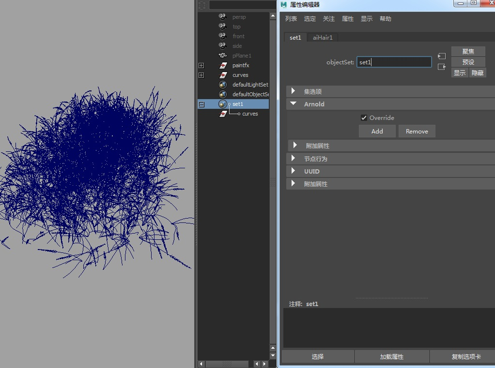
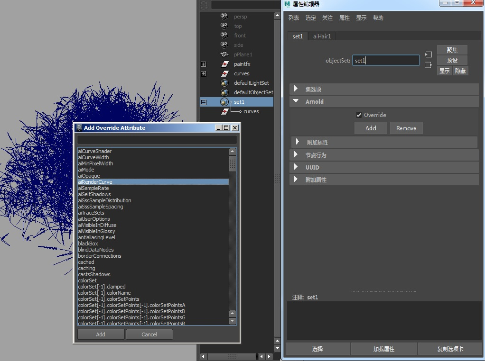
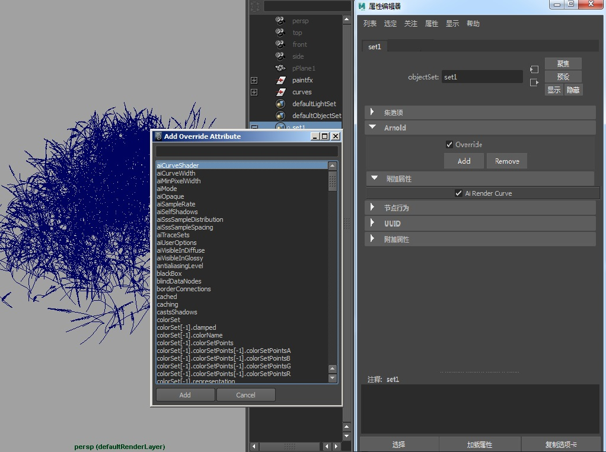
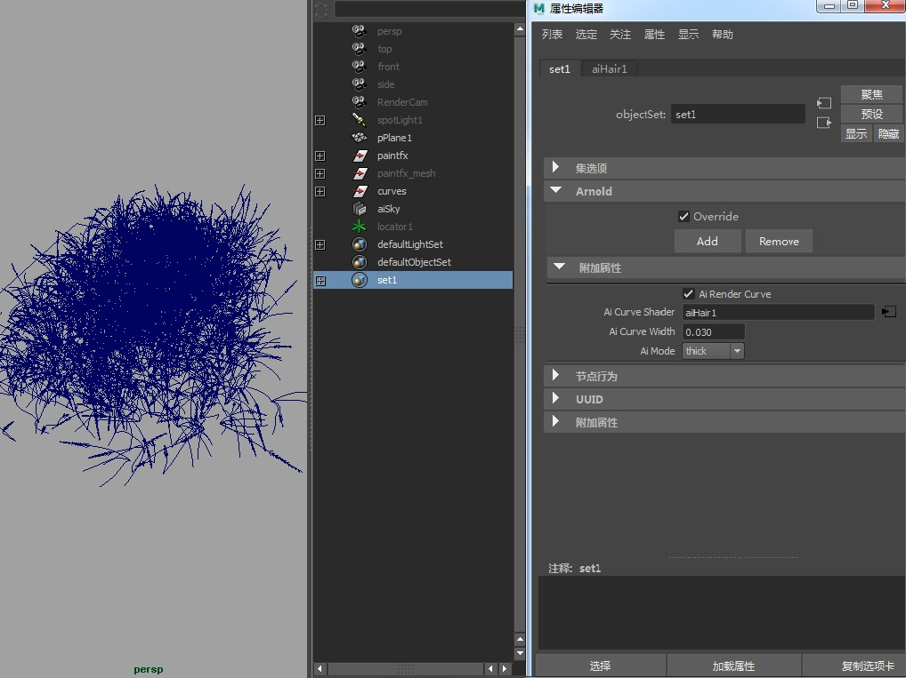

示例 3 - 渲染曲线
覆盖集非常适用于包含多条曲线的复杂场景。此场景表示一片谷物田，其中包含许多已转化为曲线的 Paint Effects 笔划。在 MtoA 中，使用覆盖集可以轻松渲染这多条曲线。

- 在该集的 Arnold 属性中，选择“添加”(Add)。此时将打开“添加覆盖属性”(Add Override Attribute)窗口（可能需要一些时间才能打开，具体取决于场景中的曲线数）。窗口打开后，请单击 AiRenderCurve，然后单击窗口底部的“添加”(Add)。

- 打开 Arnold 属性下的“附加属性”(Extra Attributes)，您应该会看到新创建的 Ai Render Curve 属性。请启用该属性。要将着色器指定给曲线，请重复上述过程，但需要添加 AiCurveShader。

- 最后，您可能要添加一个 Ai Curve Width 属性来增加曲线宽度。在本例中，还会添加 Ai Mode，为曲线提供些许圆化厚度。
